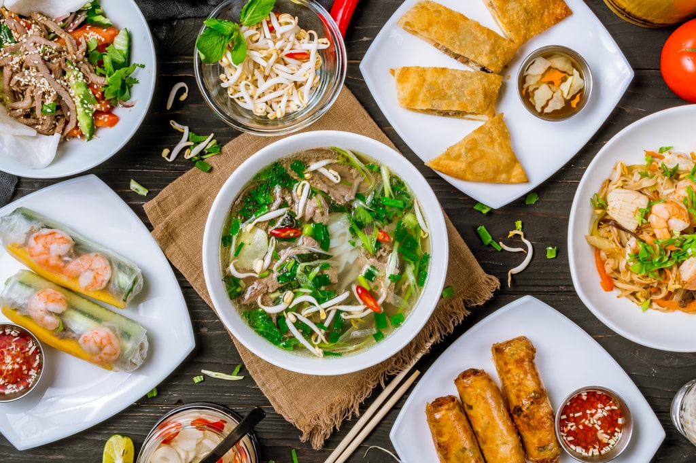

Recipes
Welcome to my website dedicated to learning the best Vietnamese Cusines have to offer. Here you will learn about the staples of Viet culture. Click the links up top to choose one of the three most popular dishes
